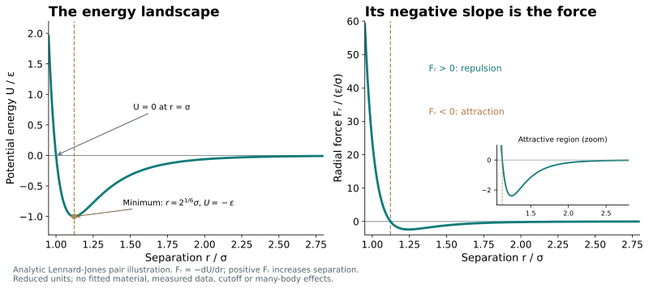
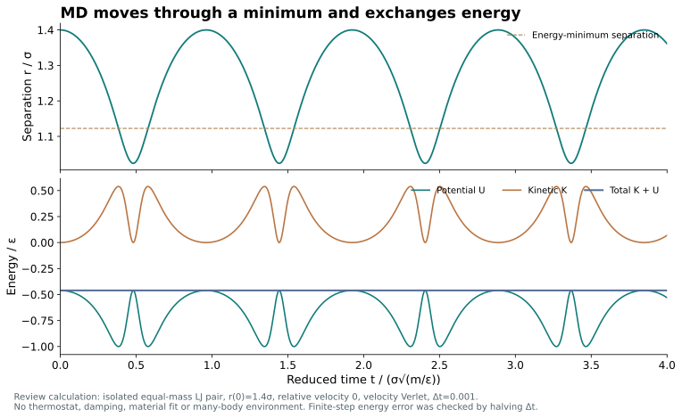
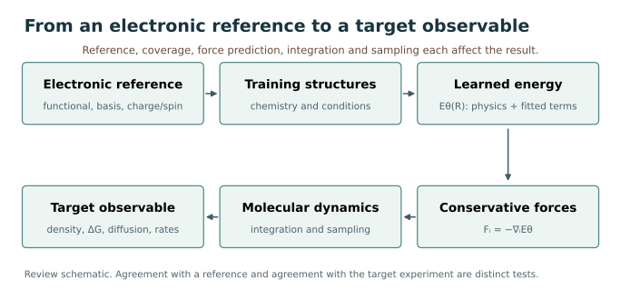

Machine-learning force fields: From interatomic forces to material properties
From the foundations of molecular dynamics to choices about model representations, training data, accuracy, and computational cost
Contents
- 1. Predicting materials through atomic motion
- 2. Describing atomic configurations through interaction energies
- 3. From the energy gradient to one MD step
- 4. Learning the energy function to be evaluated
- 5. Models differ in representation and training scope
- 6. Training data define the chemistry and conditions
- 7. Applications depend on the material and the question
- 8. Working backward from the property to the required accuracy
- 9. What remains to validate after fitting the forces
- 10. Accounting for atom count and time scale together
- 11. From atomic forces to the answer sought
- References
1. Predicting materials through atomic motion
Which paths do ions follow through a battery? Which configurations does a drug molecule retain as it approaches a protein? Which bonds break first on a catalyst surface? Beneath these different questions lie the arrangements and motions of atoms. Calculating how atoms push and pull on one another lets us explore possible structures and pathways in processes that are difficult to observe directly.
Molecular dynamics (MD) calculates this motion. In 1964, Rahman simulated liquid argon with 864 atoms interacting through a Lennard-Jones potential. [1] The systems studied today extend to proteins, electrolytes, metals, and polymers. Then as now, advancing atomic positions requires the force on every atom in the current configuration. A force field is the interaction model that supplies those forces.
A machine-learning force field (MLFF) learns the relationship between atomic configurations and energies or forces from data. It seeks to represent complex environmental dependence while reducing the cost of repeating detailed electronic-structure calculations at every instant. To understand this possibility, we first need to follow what an energy function represents, how its gradient gives forces, and how repeated force calculations yield material properties. Model architecture, training data, and validation then take their place in that process.
2. Describing atomic configurations through interaction energies
Let R=(R₁,…,Rₙ) denote the coordinates of N atomic nuclei. The potential energy U(R) is a single number associated with the entire configuration. Moving the atoms changes this value. The function assigning an energy to each possible configuration is the potential-energy surface (PES). A drawing of a curved surface projects this function onto a few of its many coordinates. Each point represents a complete configuration, so its meaning differs from that of one atom rolling over a hill in physical space.
Molecular mechanics for biomolecules commonly separates the energy into contributions from bond lengths, bond angles, torsion angles, and nonbonded interactions. A representative expression is [2]

| Term and example | Change described | Meaning of the parameters |
|---|---|---|
| Bond: ½kᵦ(r−r₀)² | Stretching the bond between two specified atoms | r₀ is the equilibrium length; kᵦ is a stiffness with units of energy/length². |
| Angle: ½kₐ(α−α₀)² | Bending the angle formed by three atoms | α₀ is the equilibrium angle. The units of kₐ must be consistent with angles expressed in radians. |
| Torsion: Σₙ Vₙ[1+cos(nφ−δₙ)] | Rotational barriers as a function of the dihedral angle of four atoms | Vₙ sets the energy scale, n is the periodicity, and δₙ is the phase. |
| Nonbonded: Uᴸᴶ(rᵢⱼ)+kₑqᵢqⱼ/rᵢⱼ | Interatomic repulsion, dispersion, and electrostatics | qᵢ is a partial charge; kₑ is the Coulomb constant in the chosen unit system. Pair contributions must be summed without indiscriminate double counting. |
After choosing the functional form, parameters for atom types and chemical environments are fitted to quantum-chemical and experimental data. Even the harmonic expressions ½k(r−r₀)² and k′(r−r₀)² define their coefficients differently. Exclusions for bonded pairs, scaling of 1–4 nonbonded interactions, and combinations of water and ion models also belong to the chosen force field. Replacing or mixing parameter files therefore makes a physical choice that goes beyond changing a few symbols.
The Lennard-Jones (LJ) potential represents steep short-range repulsion and longer-range attraction with two terms. Here ε is the depth of the energy well and σ is the separation where the energy crosses zero. The minimum occurs at 2^(1/6)σ, where U=−ε. The r⁻⁶ term captures the long-range form of dispersion for suitable neutral atom pairs, whereas the r⁻¹² repulsion is a convenient empirical approximation. This single pair function cannot describe directional covalent bonding in its entirety. [3]
Empirical models have long described the influence of the surrounding environment. EAM includes an embedding energy that depends on the density around a metal atom, while Tersoff changes the effective bond strength with neighboring atoms and bond angles. [4,5] Reactive and polarizable empirical force fields also exist. Presenting MLFFs as the first transition from simple pair interactions to complex physics would overlook these developments. The central change is the much greater flexibility with which interaction functions and their representations can be determined from data.
3. From the energy gradient to one MD step
The negative coordinate derivative of the energy gives the force on each atom. Energy is a scalar associated with one configuration; forces are vectors, with a magnitude and direction for every atom. Taking the direction of increasing separation r at atom i as positive, the radial force for an LJ pair is
For r<2^(1/6)σ, the force is repulsive and separates the atoms; at larger separations, it is attractive. At σ, the energy is zero but the force is 24ε/σ, which is nonzero. The force depends on the energy gradient rather than its absolute value. The enlarged panel on the right of Fig. 1 shows the otherwise small-looking attractive region.

In code, one calculates the displacement dᵢⱼ=Rᵢ−Rⱼ and distance r=|dᵢⱼ|, adds fᵣdᵢⱼ/r to the force on atom i, and adds the opposite force to atom j. For a many-body potential, differentiation must include every coordinate dependence of the energy on the surrounding atomic environments. Automatic differentiation of an ML energy model performs this calculation as well. The force on an atom generally cannot be obtained by differentiating only the energy contribution assigned to that atom.
An MD integrator advances positions and velocities using these forces and the atomic masses. One velocity Verlet step advances the velocities by half a step, updates the positions with those velocities, recalculates forces for the new complete configuration, and advances the velocities through the remaining half step. [6]

In Fig. 2, two equal-mass LJ particles start at rest, farther apart than their equilibrium separation. Attraction accelerates them toward one another. They pass the energy minimum, move closer, and then separate again under repulsion. Kinetic and potential energy exchange while their sum remains constant within a small integration error. MD follows time-dependent motion with velocity and inertia, unlike energy minimization.

Large systems reduce the cost of searching all atom pairs by updating neighbor lists with a cutoff and an additional buffer. [7] Long-range electrostatics under periodic boundary conditions are combined with a separate summation method such as PME. [8] If a switching function multiplies the energy, its derivative must also enter the force. The time step, unit system, boundary conditions, and choice of thermostat and barostat remain implementation requirements when using an MLFF. An NVT system exchanges energy with a heat bath, so the isolated-system test for conservation of K+U does not apply unchanged.
4. Learning the energy function to be evaluated
Electronic-structure calculations determine the energy and forces for a selected electronic state at a given atomic configuration. Actual DFT results depend on the exchange-correlation functional, basis and pseudopotentials, charge and spin states, treatment of dispersion and relativity, and convergence settings. [9] Repeating this calculation at every MD step in Born–Oppenheimer dynamics can describe flexible chemistry, but is expensive. Simulating 1 μs with a 1 fs time step requires a billion force evaluations.
An MLFF fits a surrogate function to energies and forces computed in advance for representative structures. A typical local energy model converts the environment of atom i into a descriptor Dᵢ and sums atomic contributions eθ(Dᵢ). [10] Here θ denotes learned coefficients or neural-network weights. Atomic contributions are an internal decomposition used to represent the total energy; they do not imply that the energy of each atom is separately measured in an experiment and supplied as a target.

Uexplicit contains selected explicit contributions such as long-range electrostatics, dispersion, or short-range repulsion. Models need not use this decomposition or include all these terms. The energy must remain unchanged if the configuration is translated or rotated, or if labels of atoms of the same element are permuted. Force vectors must rotate with the configuration. Building these symmetries into a model removes irrelevant differences that would otherwise have to be learned. Equivariant models retain directional internal information, providing a way to learn angular dependence while satisfying these conditions. [11]
Joint training on energy and force labels can be described by an objective such as the one below. MSE is the mean squared error over the selected structures and components, and W denotes the stress or virial as defined in the implementation. This illustrative expression captures a concept shared by several approaches.

Training requires decisions about whether to divide energies by the number of atoms, average forces over 3N components, and exclude missing labels. The values and units of wE, wF, and wW, together with weights assigned to different data sources, change the compromise the model learns. Updating θ reduces this objective. For a new configuration, the model evaluates Uθ and its derivatives without repeating the electronic-structure calculations used in training. Expressive representations, repeated reuse, and transfer learning are practical strengths of MLFFs. Accuracy for configurations or physics absent from the data requires separate validation.
Conventional ML-based MD and Born–Oppenheimer MD propagate nuclear motion classically. Learning an energy surface that reflects electronic quantum mechanics does not also describe nuclear zero-point motion or tunneling. Problems where nuclear quantum effects matter require additional treatment, such as path integrals. Equilibrium nuclear quantum statistics and real-time quantum dynamics also involve different approximations. [12,13]

5. Models differ in representation and training scope
Choosing an MLFF begins with examining what information represents a configuration and how that information produces an energy. Even within one model family, changes to the data, cutoff, and model size alter accuracy and cost. The following table compares representative design principles; it is not a performance ranking.
| Design and representative models | What is learned | Strengths and conditions for use |
|---|---|---|
| Kernels: GAP and sGDML | GAP performs regression using similarities between local atomic environments. sGDML learns the full force field of a specific molecule while enforcing energy conservation. [14,12] | Physical symmetries and the regression structure can make efficient use of expensive reference data. The number of representative environments and the training domain determine cost and transferability; the two models use different spatial decompositions. |
| Symmetry descriptors and neural networks: Behler–Parrinello and ANI | Atomic neural-network weights are fitted using invariant distance- and angle-based descriptors, and the atomic contributions are summed. [10,15] | A fixed network evaluates new configurations. Its representational scope depends on descriptors, cutoff, elements, and training environments. The H/C/N/O coverage of the original ANI-1 should not be generalized to every ANI version. |
| Many-body basis expansions: ACE | Atomic environments are expanded in a symmetry-adapted basis. A linear energy model with a fixed basis can be fitted by regression of its coefficients. [16] | Expansion order and basis size tune expressivity and cost. ACE is not restricted to linear models; nonlinear constructions are also possible. |
| Equivariant graph neural networks: NequIP and MACE | Atoms and neighbors form a graph whose features, including directional information, are updated. MACE constructs higher-order many-body messages. [11,17] | These models learn complex angular and environmental dependence. Channels, angular order, layers, and neighbor counts affect memory and cost. A finite receptive range and correct long-range asymptotic behavior are separate considerations. |
Training strategy and the choice of physical terms provide additional distinctions that overlap with this table. Pretrained potentials such as CHGNet and MACE-MP use weights learned from broad datasets either directly or as starting points for fine-tuning on a new system. [18,19] Pretraining does not itself denote a new force law or a distinct neural-network architecture. Using a model for inference, refitting its weights to new labels, and training from scratch are different operations.
PhysNet and SO3LR Tauri illustrate approaches that combine learned energies and environment-dependent properties with explicit electrostatics, dispersion, and other terms. [20,21] Long-range terms allow selected interactions beyond the graph cutoff to be calculated, but their functional forms and assumptions about charge and polarization still matter. Pretraining, equivariance, and explicit long-range terms can coexist in one model.
| Type of setting | Examples | What it determines |
|---|---|---|
| Learned parameters | Kernel and basis coefficients; neural-network weights and element embeddings; weights of output layers predicting charge and dispersion properties | The fitted function θ within the selected representation and data |
| Representation and training settings | Cutoff; basis, many-body, and angular orders; number of layers and channels; regularization; objective and data weights | Representational scope, training compromises, and computational cost. Depending on the implementation, some basis parameters may also be learned. |
| Physical reference for the labels | Electronic-structure method, basis, charge and spin, dispersion corrections, and convergence conditions | What the model learns as its target. Changing the reference changes the problem even for the same structure. |
A model name alone does not specify these three sets of choices. The architecture name MACE should be distinguished from the training data and checkpoints of MACE-MP, and the selected version, reference level, and units should be recorded. With limited data for an application, a relevant pretrained model can be validated and fine-tuned. Unsupported chemistry or a different electronic-structure reference may instead motivate training a model from scratch for a narrower system. These options should be compared against the same objective and validation data.
6. Training data define the chemistry and conditions
Expressivity alone leaves a problem if the configurations that must be learned are absent from the data. Coverage must be examined for bonding and coordination, charge and spin, compression and thermal deformation, solvents and ions, and reaction pathways, as well as for elements. The labels actually used in training—energy, forces, or stress—and the accuracy of the reference calculations also need to be checked. SO3LR Tauri, a preprint released on 4 November 2026, provides a concrete example of how these choices are made.
The Tauri data release counts approximately 149 million entries, but includes about 690,000 reused neutral-water structures twice. This total therefore differs from the number of unique structures. Labels from different electronic-structure levels are combined in stages, so the final production model cannot be treated as a direct replica of a single, pure DFT reference. The release also identifies the sources of energy and force labels and the sampling weights for each source. [22]
| Dataset | Chemistry and labels included | Conditions for interpretation |
|---|---|---|
| QCML | Small molecules and distorted structures. PBE0+MBD-NL energies, forces, and electronic properties | Broad elemental coverage does not mean uniform coverage of element combinations, conformations of large molecules, or diverse high-spin states. [23] |
| QCell | Biomolecular fragments including lipids, sugars, nucleic acids, and ions. PBE0+MBD(-NL) | Reinforces recurring local environments in large biomolecules. Collecting fragments does not validate the equilibrium distribution of an entire protein. [24] |
| OMol25-0 and OPoly26 | Diverse charged, metal-containing, and reactive environments, and polymer fragments. ωB97M-V force labels | Tauri does not mix energy labels from these two sources into training. Elemental, charge, and distorted-structure coverage, as well as the version, must be checked separately. [22,25,26] |
Using the same structures does not imply using the same labels. For example, the main electronic-structure reference in the original SPICE dataset is ωB97M-D3(BJ), whereas the SPICE dipeptide structures included in Tauri were recalculated at PBE0+MBD. [22,27] Inferring the training reference from a dataset name alone misses such differences.
Test splits must also be interpreted in relation to their purpose. Some internal Tauri data are split by randomly shuffling structures, whereas the reported OMol and OPoly force evaluations use the original datasets’ validation splits based on atomic composition. [22,25,26] Transfer to molecules of different composition, transfer to new temperatures, phases, or reaction pathways, and stability over long trajectories require different tests.
Biomolecular and crystalline-material datasets are not interchangeable general-purpose resources. SPICE and Nutmeg primarily target room-temperature configurations of drug-like molecules and peptides, and Nutmeg does not target chemical reactions. [27] The MPtrj data used by CHGNet are based on DFT relaxation trajectories of inorganic crystals, with splits by material ID. [18] A model that performs well for molecules in aqueous solution need not be the best choice for crystal phase stability or defects.
7. Applications depend on the material and the question
In materials science and chemistry, force fields are used to calculate optimized structures, vibrations and elasticity, defect migration, and thermal and ionic transport. Molecular chemistry examines configurations, spectra, and reaction pathways; liquids and electrolytes raise questions about solvation, ion pairing, and diffusion; biomolecular studies consider structural distributions, protonation, and binding. Each question requires particular interactions and sampling.
Fast local potentials estimate energy from neighboring atomic environments. They are efficient at a specified density and cutoff, but appropriate long-range treatment is needed when distant charges or collective electronic responses matter. Neural-network potentials that explicitly address nonlocal charge transfer provide one example of resolving this issue through model design. [28]
| Problem | Required physics and properties to check | Implications for model choice |
|---|---|---|
| Covalent solids within a specified phase; screened metals | Bonding, deformation, defects, and vibrations. Revalidate for surfaces or other phases. | A local ML potential validated within that domain can be an efficient candidate. |
| Electrolytes, proteins, and charged interfaces | Long-range electrostatics, dielectric response, ion pairing, and solvation | Examine explicit long-range terms and charge and environmental responses. Including PME alone does not fully describe polarization. |
| Molecular crystals, adsorption, and molecular recognition | Competition among dispersion, hydrogen bonding, solvent interactions, and intramolecular interactions | Check the dispersion functional form, condensed-phase data, and relative binding and solvation free energies. |
| Bond formation, bond breaking, and proton transfer | Charge and spin states, transition states, and competing pathways | Data covering reactive environments and barrier validation are needed. The absence of a fixed bond topology alone does not guarantee accurate reaction rates. |
Tauri adds short-range repulsion and environment-dependent charge and dispersion terms to a semilocal neural-network energy. [21] Enforcing the sum of predicted charges differs from solving charge equilibration globally; environment-dependent dispersion coefficients differ from explicit many-body dispersion; and a total-spin input differs from spin dynamics. If photoexcited states or nonadiabatic transitions are the target, the first question is whether a scalar potential for a single electronic state is sufficient.
Empirical force fields have also been carefully tuned to quantum-chemical and experimental data, and include polarizable and reactive models. When long-time sampling is important for a validated biomolecular problem with fixed bond topology, a well-validated empirical model remains an important comparator. Comparing the total cost of reaching a target error gives no inherent priority to the MLFF category itself.
8. Working backward from the property to the required accuracy
The roughly 1 kcal/mol commonly called chemical accuracy is a useful scale rooted in thermochemistry. It is not a universal certification threshold for forces, vibrational frequencies, reaction rates, or diffusion coefficients. [12] For an entire reaction or pair of states being compared, this energy corresponds to about 43.36 meV. An overall test error normalized in meV/atom cannot be compared directly with the error in the energy difference between a reactant and a transition state.
When the target is a reaction rate, the tolerance can be specified more concretely. Assuming the same prefactor and transmission coefficient in transition-state theory, an error δΔG‡ in the free-energy barrier changes the rate as follows:
Here R is the gas constant and T the absolute temperature. At 300 K, RT is about 0.596 kcal/mol, so overestimating or underestimating a free-energy barrier by 1 kcal/mol changes the rate by a factor of about 5.35. Keeping the effect of barrier error alone within a factor of two requires an error no larger than about 0.413 kcal/mol. This is an illustrative analytical calculation for this review, not a conversion of mean energy MAE into an actual rate error.

For a liquid-density target, equilibrium density and its temperature and pressure dependence matter. Ionic conductivity requires diffusion, ion pairing, and correlations in collective transport; a crystalline phase transition requires free-energy differences between competing phases. Biomolecular binding or folding requires solvation, relative free energies of metastable states, and sufficient sampling. Once the target property and conditions are specified, one can work backward to identify which errors in energy, forces, stress, or reaction barriers must be reduced. This establishes a minimum acceptable accuracy and tolerance for the particular problem.
9. What remains to validate after fitting the forces
The Forces are not Enough benchmark shows why low test force error, stable trajectories, and accurate properties must be checked separately. On Water-10k, NequIP produced longer stable trajectories than GemNet-T, even though GemNet-T had a lower force MAE. Other models that remained stable still failed to reproduce diffusion accurately. The water reference here is the flexible SPC/E model rather than DFT. These results therefore demonstrate disagreement among evaluation metrics; they do not establish a universal ranking of DFT-based models. [29]
Tauri likewise reports a corrected diffusion coefficient of 119 Ų/ns for liquid water, compared with an experimental value of 230 Ų/ns. For the proline-catalyzed aldol pathway, the largest T-L model has a barrier MAE of 2.9 kcal/mol. These are electronic activation barriers compared against PBE0+MBD-NL single-point energies on T-L geometries, distinct from the free-energy barriers used in the rate example above. [21] Broad coverage of structures and pathways must be considered alongside accuracy in transport and quantitative rates. The authors explicitly acknowledge these limitations.
A systematic application can use validation designed around its purpose. The procedure below is a proposed computational approach drawn from prior studies and this case, rather than an independent reproduction of the source paper’s experiments.
- Specify the target property and its tolerance. Record the elements, charge and spin, phase, concentration, temperature, pressure, boundary conditions, and units of the property.
- Select representative and challenging structures separately, and begin by checking the electronic-structure reference. For reactions, include transition states and competing pathways as well as reactants; for condensed phases, include ionic, solvent, compressed, and distorted environments.
- Separate training from validation and examine both average errors and the high-error tail. Check energy differences, forces, and any required stresses and barriers under the intended configurational conditions.
- Use short NVE calculations to check drift as a function of time step, cutoff, and long-range accuracy, and determine whether a thermostat is masking integration problems. Energy conservation and an accurate potential are separate requirements.
- Estimate uncertainty in the target property using independent trajectories and appropriate correlation times. Check convergence with box size, trajectory length, free-energy windows, and treatment of nuclear motion as required for the problem.
- Identify and address distinct causes of failure. Missing environments call for targeted data and retraining; missing physics requires an appropriate model; slow transitions require a sampling strategy. After revision, validate both the original and new domains again.
Active learning can reduce the cost of adding reference calculations for new environments. FLARE provides a concrete precedent: it calls electronic-structure calculations to update the model when uncertainty grows. [30] Uncertainty is a signal to request a reference calculation, however, not a guarantee of accuracy. Several models can share errors outside the data distribution, so agreement among them alone cannot establish accuracy.
10. Accounting for atom count and time scale together
Computational cost includes reference-data generation and training, force evaluation at every MD step, the integration interval, replicate trajectories, and free-energy sampling. When reusing a pretrained model, one can budget separately for training costs already incurred and the validation, fine-tuning, and production costs of the new problem. Local models often scale linearly with the number of atoms at fixed density and cutoff, whereas FFTs for long-range PME generally carry an N log N cost. [8]
Cost for a new problem ≈ reference calculations + validation and fine-tuning + (physical time/integration interval) × cost per step + replicates and analysis
Tauri’s medium model is reported to take approximately 0.98 μs/atom/step on an MI355X with 288 GB of memory. This figure excludes JIT compilation and uses periodic water, PME, and the fast memory mode. For 50,000 atoms and a 1 fs time step, it corresponds to about 1.8 ns/day. The maximum capacity of 84 million atoms is a different measure from throughput for long biomolecular trajectories. [21]
For example, integrating 1 μs with a 1 fs time step requires a billion steps. A simple extrapolation at the stated converted throughput gives about 556 GPU-days for 1 μs. This is an arithmetic illustration assuming that the water-benchmark throughput is sustained, not a runtime prediction for an actual protein. Independent replicates, multiple enhanced-sampling windows, or multiple path-integral beads would change the required computation.
Speed comparisons must match the GPU and memory, numbers of atoms and neighbors, precision, cutoff and PME settings, time step, and inclusion of JIT compilation and initialization. If a faster model increases bias in the target free energy or requires longer trajectories, a lower cost per step may not reduce the cost of the final answer. The relevant comparison is the total cost of obtaining the desired property within the required uncertainty.
11. From atomic forces to the answer sought
Choosing an energy function, obtaining forces from its gradient, and using those forces to advance atomic motion form a common structure linking empirical force fields and many MLFFs. MLFFs change how complex energy functions are constructed and reused. Environmental dependence learned from electronic-structure calculations and flexible representations create opportunities to explore more configurations and materials.
Turning that opportunity into a computable answer requires a precise question. Finding a reaction pathway and reproducing its rate demand different data, accuracy, and time scales, as do briefly maintaining a protein structure and determining its folding equilibrium. Specify the property of interest, choose a model capable of representing the relevant physics, and validate it with independent data and converged sampling. This order makes it possible to compare force-field types and sizes, data-generation costs, and computational budgets against the same scientific objective.
References
- [1]A. Rahman, Correlations in the motion of atoms in liquid argon, Phys. Rev. 136, A405 (1964). doi:10.1103/PhysRev.136.A405
- [2]OpenMM contributors, Standard forces, OpenMM User Guide 8.6 (accessed 6 November 2026). https://docs.openmm.org/latest/userguide/theory/02_standard_forces.html
- [3]LAMMPS developers, pair_style lj/cut command, LAMMPS release 30Sep2026 (accessed 6 November 2026). https://docs.lammps.org/pair_lj.html
- [4]M. S. Daw and M. I. Baskes, Embedded-atom method: Derivation and application to impurities, surfaces, and other defects in metals, Phys. Rev. B 29, 6443 (1984). doi:10.1103/PhysRevB.29.6443
- [5]J. Tersoff, New empirical approach for the structure and energy of covalent systems, Phys. Rev. B 37, 6991 (1988). doi:10.1103/PhysRevB.37.6991
- [6]LAMMPS developers, How a timestep works, LAMMPS release 30Sep2026 (accessed 6 November 2026). https://docs.lammps.org/Developer_flow.html
- [7]LAMMPS developers, Neighbor lists, LAMMPS release 30Sep2026 (accessed 6 November 2026). https://docs.lammps.org/Developer_par_neigh.html
- [8]T. Darden, D. York, and L. Pedersen, Particle mesh Ewald: An N log(N) method for Ewald sums in large systems, J. Chem. Phys. 98, 10089 (1993). doi:10.1063/1.464397
- [9]W. Kohn and L. J. Sham, Self-consistent equations including exchange and correlation effects, Phys. Rev. 140, A1133 (1965). doi:10.1103/PhysRev.140.A1133
- [10]J. Behler and M. Parrinello, Generalized neural-network representation of high-dimensional potential-energy surfaces, Phys. Rev. Lett. 98, 146401 (2007). doi:10.1103/PhysRevLett.98.146401
- [11]S. Batzner, A. Musaelian, L. Sun, M. Geiger, J. P. Mailoa, M. Kornbluth, N. Molinari, T. E. Smidt, and B. Kozinsky, E(3)-equivariant graph neural networks for data-efficient and accurate interatomic potentials, Nat. Commun. 13, 2453 (2022). doi:10.1038/s41467-022-29939-5
- [12]S. Chmiela, H. E. Sauceda, K.-R. Müller, and A. Tkatchenko, Towards exact molecular dynamics simulations with machine-learned force fields, Nat. Commun. 9, 3887 (2018). doi:10.1038/s41467-018-06169-2
- [13]i-PI developers, Core features, i-PI documentation (accessed 6 November 2026). https://docs.ipi-code.org/features.html
- [14]A. P. Bartók, M. C. Payne, R. Kondor, and G. Csányi, Gaussian approximation potentials: The accuracy of quantum mechanics, without the electrons, Phys. Rev. Lett. 104, 136403 (2010). doi:10.1103/PhysRevLett.104.136403
- [15]J. S. Smith, O. Isayev, and A. E. Roitberg, ANI-1: An extensible neural network potential with DFT accuracy at force field computational cost, Chem. Sci. 8, 3192 (2017). doi:10.1039/C6SC05720A
- [16]R. Drautz, Atomic cluster expansion for accurate and transferable interatomic potentials, Phys. Rev. B 99, 014104 (2019). doi:10.1103/PhysRevB.99.014104
- [17]I. Batatia, D. P. Kovacs, G. Simm, C. Ortner, and G. Csanyi, MACE: Higher order equivariant message passing neural networks for fast and accurate force fields, Adv. Neural Inf. Process. Syst. 35, 11423 (2022). https://papers.neurips.cc/paper_files/paper/2022/hash/4a36c3c51af11ed9f34615b81edb5bbc-Abstract-Conference.html
- [18]B. Deng, P. Zhong, K. Jun, J. Riebesell, K. Han, C. J. Bartel, and G. Ceder, CHGNet as a pretrained universal neural network potential for charge-informed atomistic modelling, Nat. Mach. Intell. 5, 1031 (2023). doi:10.1038/s42256-023-00716-3
- [19]I. Batatia et al., A foundation model for atomistic materials chemistry, J. Chem. Phys. 163, 184110 (2025). doi:10.1063/5.0297006
- [20]O. T. Unke and M. Meuwly, PhysNet: A neural network for predicting energies, forces, dipole moments, and partial charges, J. Chem. Theory Comput. 15, 3678 (2019). doi:10.1021/acs.jctc.9b00181
- [21]A. Kabylda, F. N. Brünig, M. Gallegos, J. T. Frank, E. Moerman, O. T. Unke, S. Chmiela, K.-R. Müller, and A. Tkatchenko, SO3LR Tauri: Generally applicable force fields for reactive (bio)molecular simulations covering the periodic table, arXiv:2611.06237v1 (2026). https://arxiv.org/abs/2611.06237v1
- [22]A. Kabylda, F. Brünig, M. Gallegos González, T. Frank, E. Moerman, O. T. Unke, S. Chmiela, K.-R. Mueller, and A. Tkatchenko, Data for "SO3LR Tauri: Generally Applicable Force Fields for Reactive (Bio)Molecular Simulations Covering the Periodic Table", version 1.0.0, Zenodo (2026). doi:10.5281/zenodo.22920714
- [23]S. Ganscha, O. T. Unke, D. Ahlin, H. Maennel, S. Kashubin, and K.-R. Müller, The QCML dataset, quantum chemistry reference data from 33.5M DFT and 14.7B semi-empirical calculations, Sci. Data 12, 406 (2025). doi:10.1038/s41597-025-04720-7
- [24]A. Kabylda, S. Suárez-Dou, N. Davoine, F. N. Brünig, and A. Tkatchenko, QCell: Comprehensive quantum-mechanical dataset spanning diverse biomolecular fragments, AI Sci. 2, 025003 (2026). doi:10.1088/3050-287X/ae5267
- [25]D. S. Levine et al., The Open Molecules 2025 (OMol25) dataset, evaluations, and models, arXiv:2505.08762v2 (2026). https://arxiv.org/abs/2505.08762v2
- [26]D. S. Levine, N. Liesen, L. Chua, J. Diffenderfer, H. I. Ingolfsson, M. P. Kroonblawd, N. Kumar, A. Maiti, S. S. Mohottalalage, M. Shuaibi, B. Van Essen, B. M. Wood, C. L. Zitnick, S. M. Blau, and E. R. Antoniuk, The Open Polymers 2026 (OPoly26) dataset and evaluations, arXiv:2512.23117v2 (2026). https://arxiv.org/abs/2512.23117v2
- [27]P. Eastman, B. P. Pritchard, J. D. Chodera, and T. E. Markland, Nutmeg and SPICE: Models and data for biomolecular machine learning, J. Chem. Theory Comput. 20, 8583 (2024). doi:10.1021/acs.jctc.4c00794
- [28]T. W. Ko, J. A. Finkler, S. Goedecker, and J. Behler, A fourth-generation high-dimensional neural network potential with accurate electrostatics including non-local charge transfer, Nat. Commun. 12, 398 (2021). doi:10.1038/s41467-020-20427-2
- [29]X. Fu, Z. Wu, W. Wang, T. Xie, S. Keten, R. Gomez-Bombarelli, and T. Jaakkola, Forces are not enough: Benchmark and critical evaluation for machine learning force fields with molecular simulations, Trans. Mach. Learn. Res. (2023). https://openreview.net/forum?id=A8pqQipwkt
- [30]J. Vandermause, S. B. Torrisi, S. Batzner, Y. Xie, L. Sun, A. M. Kolpak, and B. Kozinsky, On-the-fly active learning of interpretable Bayesian force fields for atomistic rare events, npj Comput. Mater. 6, 20 (2020). doi:10.1038/s41524-020-0283-z